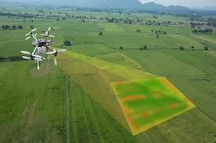

"Precision agriculture seeks to use new technologies to increase crop yields and profitability while lowering the levels of traditional inputs needed to grow crops (land, water, fertilizer, herbicides and insecticides). In other words, farmers utilizing precision agriculture are using less to grow more" Sustainable America, 2014
I hope to create a small business and provide consulting services to farmers by utilizing drones to collect NDVI imagery of the farmers crops and collect soil samples from their fields.
Through soil sample analysis, GIS analysis and referencing the NDVI imagery, I hope to provide farmers with valuable insight into their fields